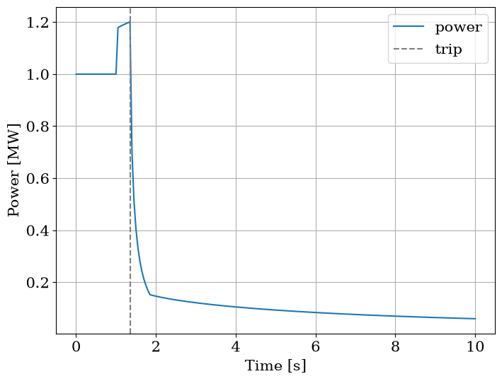

Add point kinetics, feedback and a trip¶
Bind inputs and time schedules hands a calculation its clock through funcs. This page builds a point-kinetics node alone with a controller that inserts a reactivity step at 1 s and scrams at 120 % power, seeds it, runs it to the trip and on with the rods in.
[1]:
import matplotlib.pyplot as plt
import numpy as np
from matplotlib import rc
rc("font", family="serif", size=15)
from stream import Aggregator
from stream.calculations.point_kinetics import OneWayToSCRAM, PointKinetics, ReactivityController, SCRAM_at_power
from stream.composition import point_kinetics_steady_state
from stream.examples.lofa.params import BETA, GENERATION_TIME, LAMBDA
from stream.utilities import identity
A controller and a state machine¶
ReactivityController holds the control system as two functions. input_reactivity(state, t_state, t) returns the inserted reactivity, absolute rather than in dollars, given the state and the time t_state it was entered: here 0.15 dollars from 1 s, and once scrammed, the step dropped and 5 dollars of rods driven in over 0.5 s. state_machine(state, t, power, dPdt) returns the state that should hold. OneWayToSCRAM holds the shipped states, NORMAL and SCRAM.
SCRAM_at_power is curried: SCRAM_at_power(limit) is a test on the power that returns True or False, not a state, so the machine wraps it. Without a state_machine the controller gets just(OneWayToSCRAM.NORMAL), which never trips. abort_states names the states that stop the run.
[2]:
P0 = 1e6
DOLLAR = float(np.sum(BETA))
too_high = SCRAM_at_power(1.2 * P0)
def worth(state, t_state, t, **_):
if state == OneWayToSCRAM.SCRAM:
return -5.0 * DOLLAR * min((t - t_state) / 0.5, 1.0)
return 0.15 * DOLLAR if t >= 1.0 else 0.0
def machine(state, t, power, dPdt, **_):
return OneWayToSCRAM.SCRAM if too_high(power) else state
ctrl = ReactivityController(input_reactivity=worth, state_machine=machine, abort_states={OneWayToSCRAM.SCRAM})
The kinetics node and its seed¶
PointKinetics takes the generation time, the delayed-neutron fractions and the decay rates, here the pool reactor’s six groups, and the controller as controls; its calculate requires the clock t, bound through funcs. Its name defaults to "PK", and two calculations of one name make the system refuse to build, so a second kinetics node needs its own.
Seed it with point_kinetics_steady_state, the critical state at a given power, never at zero: with no source the equations are linear in the power and the precursors, so a zero state stays zero.
[3]:
pk = PointKinetics(GENERATION_TIME, BETA, LAMBDA, controls=ctrl)
agr = Aggregator.from_decoupled(pk, funcs={pk: {"t": identity}})
y0 = agr.load(point_kinetics_steady_state(pk, P0))
P = agr.var_index(pk, "power")
print(f"seed power: {y0[P] / 1e6:.3f} MW")
print(f"residual: {np.linalg.norm(agr.compute(y0, 0.0)):.1e}")
seed power: 1.000 MW
residual: 1.6e-08
The seed sits at 1 MW with a residual of about 2e-8: the precursors balance the power.
Run to the trip¶
PointKinetics has no event margin, so the solver cannot locate the trip: the state machine is polled at each output time once the integration has covered it, and the run is cut at the first output time where an abort state is entered. The trip time is known to the output step, here 0.05 s. Without an abort state the run goes on to its end with the rods out, and only the log records the trip.
The node is all-differential, so solve dispatches it to the ODE backend, which never consults the state machine and never trips. Pass eq_type="DAE".
[4]:
time = np.linspace(0.0, 10.0, 201)
first = agr.solve(y0, time, eq_type="DAE")
t_trip = ctrl.log[-1][1]
print(f"controller log: {[(str(s), float(t)) for s, t in ctrl.log]}")
print(f"trip at: {t_trip:.2f} s")
print(f"power there: {first.data[-1, P] / P0 * 100:.1f} % of the seed")
[21:40:33] WARNING At t = 1.35000, the simulation has been stopped by [PK] aggregator.py:309
controller log: [('NORMAL', 0.0), ('SCRAM', 1.35)]
trip at: 1.35 s
power there: 120.1 % of the seed
The first output time above the limit is 1.35 s, at about 120 %, and the run stops there.
Restart with the rods in¶
A new solve from the stop row continues the transient. The controller inserts at each time the reactivity of the state its log puts there, so the rods go in from the trip. Clear abort_states first: the stop row is in the abort state at its own entry time, and the restart would stop at its first row.
[5]:
ctrl.abort_states.clear()
second = agr.solve(first.data[-1], time[time >= t_trip], eq_type="DAE")
t = np.concatenate([first.time, second.time[1:]])
power = np.concatenate([first.data[:, P], second.data[1:, P]])
print(f"peak power: {power.max() / P0 * 100:.1f} % at {t[power.argmax()]:.2f} s")
print(f"power at 10 s: {power[-1] / P0 * 100:.1f} %")
fig, ax = plt.subplots(figsize=(8, 6))
ax.plot(t, power / 1e6, label="power")
ax.axvline(t_trip, color="gray", linestyle="--", label="trip")
ax.set_xlabel("Time [s]")
ax.set_ylabel("Power [MW]")
ax.grid()
ax.legend()
plt.show()
peak power: 120.1 % at 1.35 s
power at 10 s: 6.0 %

On the output grid the peak is the stop row, and the rods take the power down to about 6 % by 10 s.
The controller keeps its log after a solve and nothing resets it: a second run inserts the rods at the old trip time, whatever its own power does. ctrl.reset() returns it to its initial state.
Feedback and outside power¶
Feedback. temp_worth and ref_temp are keyed by the calculations that supply T, a channel or a fuel, and hold a reactivity per kelvin and the temperature of zero feedback; T arrives through graph edges, not funcs. Attaching the kinetics wires both for a full core.
Outside power. PointKineticsWInput adds an algebraic row for the total power, the fission power plus a power_input bound through funcs. power_input is the non-fission power only, and point_kinetics_steady_state(pk, power, power_input=...) seeds the fission rows on the difference. That node dispatches to DAE unaided.
Power and reactivity shows kinetics with feedback and a flow trip at scale. Add decay heat builds the power_input, and Trip, stop and restart writes a trip the solver locates in time.